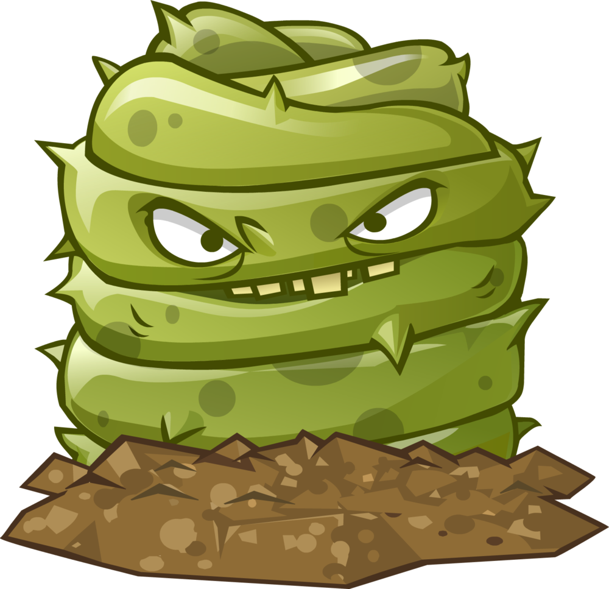

I do not categorise these plants in the other three categories, just because they are unique in their own way. They either do nothing to help with the fight against the zombies, or they are beneficial in such that they boost other plants' performances, provide extra resources or deal damage or anything else helpful against the zombies. They are best used when there is a real use for them; otherwise, they take up a seed slot that will not be used (and there are only 7 to use, it's not that easy!!!).
|  | ||||||
|
ICEBERG LETTUCE Iceberg Lettuces freeze a zombie when stepped on.Area: single Range: touch Recharge: sluggish Usage: single use, on contact Special: explodes, temporarily freezing a zombie Cost: 0 |
GRAVE BUSTER Grave Busters consume graves they're planted on.Recharge: fast Usage: single use, must be planted on graves Special: removes graves Cost: 0 |
SPRING BEAN Spring Beans bounce back zombies that get too close. Will bounce them into water if nearby.Damage: moderate Area: damages all zombies in the 6 tiles in front of it Range: close Recharge: fast Cost: 150 |
BLOVER Blovers blow away all zombies in the air.Area: full board Recharge: fast Usage: single use, instant Special: blows away all flying zombies Cost: 50 |
E.M.PEACH E.M.Peaches explode and disable all machines in an area.Area: 3x3 Recharge: sluggish Usage: single use, instant Special: disables machines Cost: 25 |
TILE TURNIP Tile Turnips create a Power Tile on planting.Recharge: mediocre Cost: 0, then 250, and doubles after that |
MAGNET-SHROOM Magnet-shrooms remove helmets and other metal objects from zombies.Recharge: mediocre Special: removes metal objects from zombies Cost: 100 |